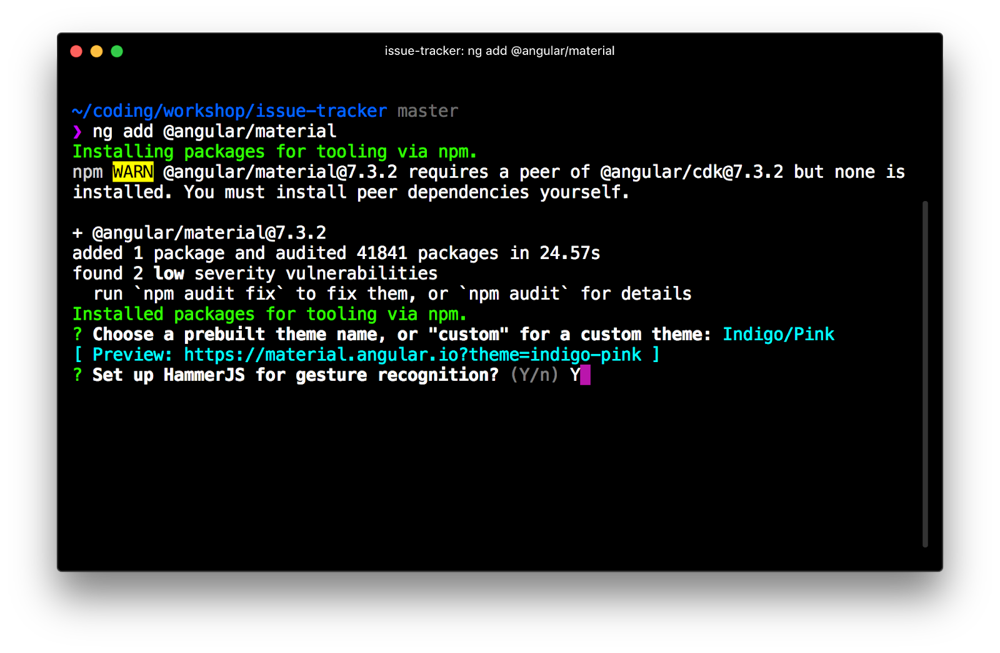
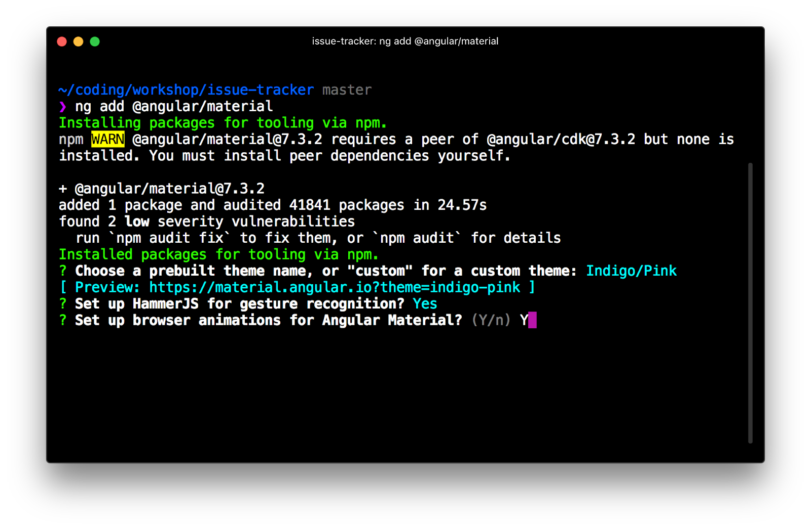
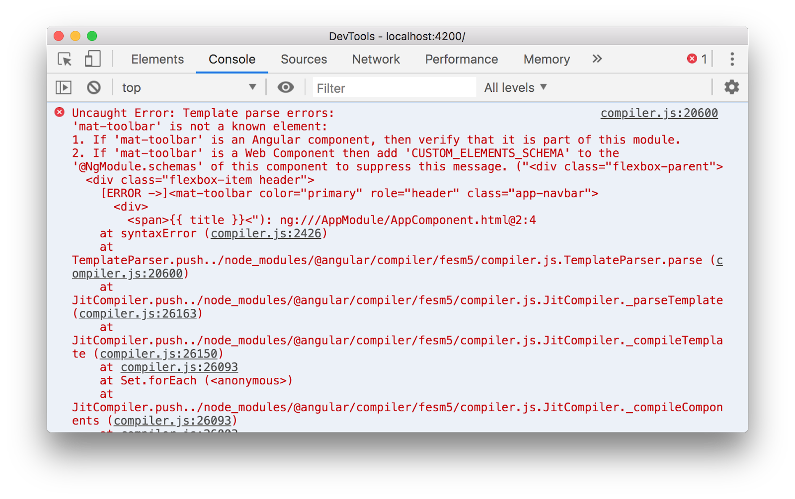
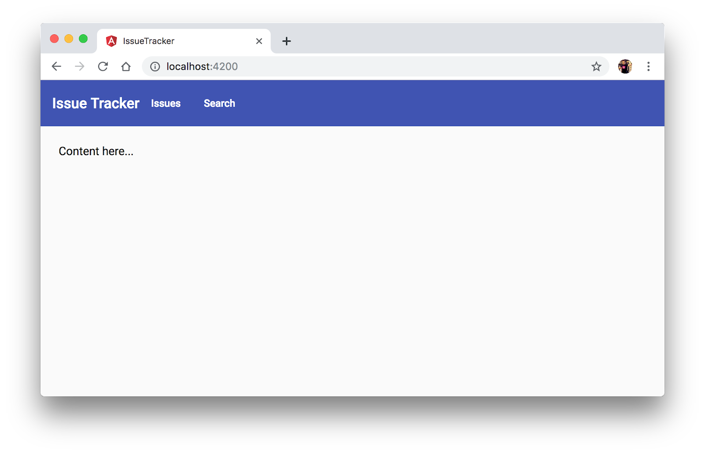
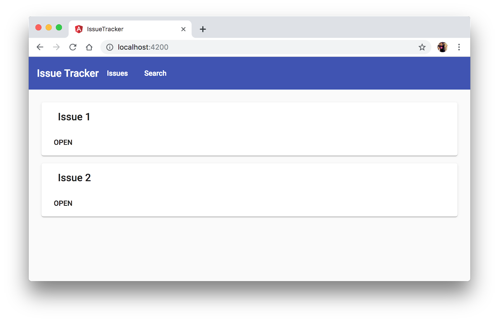
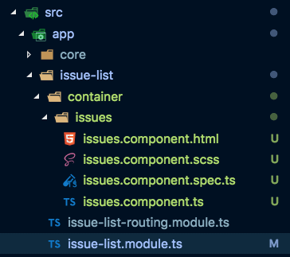
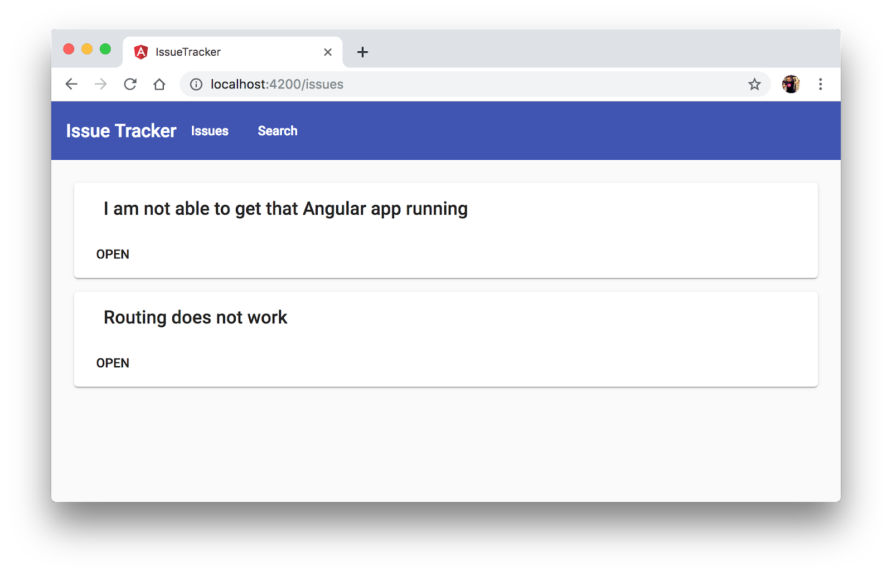
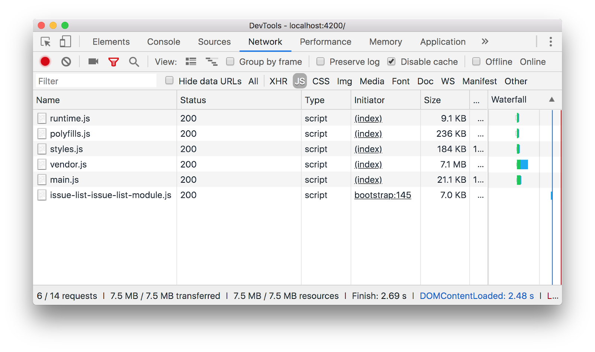
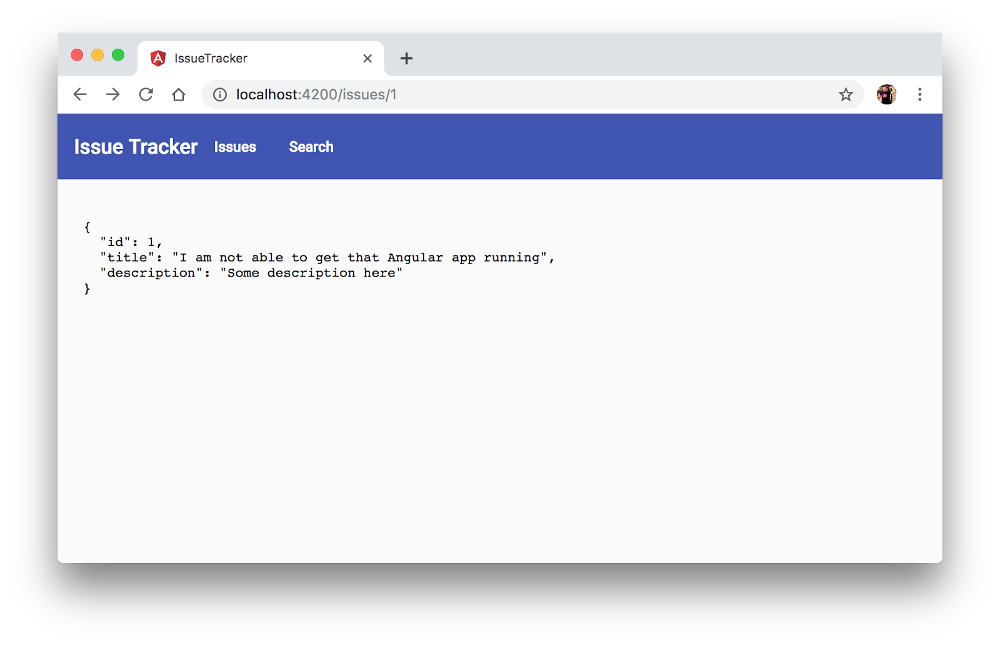
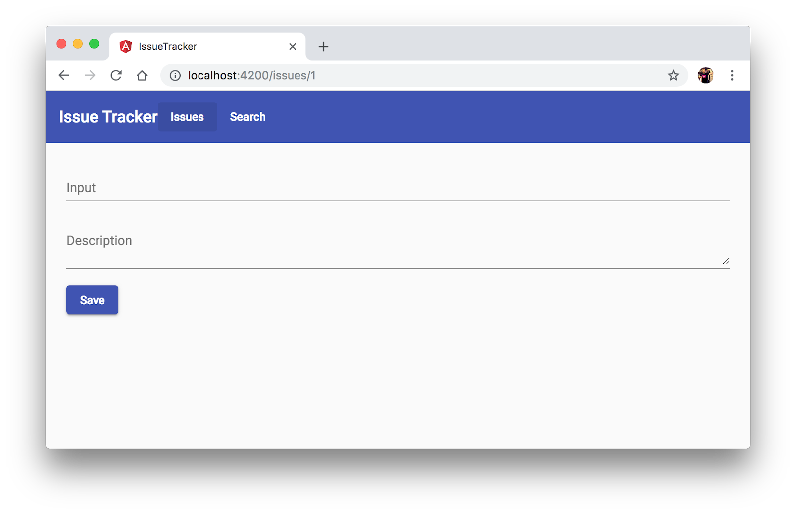

In this codelab you're going to learn the fundamentals of Angular by building a simple application, called "Issue Manager".

What you'll learn
- Use the Angular CLI for development (serving our project, building, scaffolding code,..)
- Installing external libraries, specifically the Angular Material library
- Structuring an Angular app into modules
- Creating components and binding data
- Creating services and consume them from a component
- Setting up the Angular Http client with your Angular App Module
- Using Angular's HTTP service
- Set up Angular routes and lazy loading
- Using forms to edit data
What you'll need
- A valid code editor, ideally Visual Studio Code
- Git and a recent version of Node (v9+) and NPM (v5+)
Download the Code
Click the following link to download all the code for this codelab:
Unzip the code and open it with Visual Studio Code (or your respective code editor of choice).
Install npm packages and start the app
After unpacking the files, open up a terminal (you can also do that from within Visual Studio Code) at the location where you unzipped your files.
Execute npm install (from your command line) to download all the necessary packages.
Run the app
Once installed, open your terminal (also from within VSCode) and type
$ npm startYou should ideally see something like this in your browser:

We want to be building a nice looking UI. As such we're installing Angular Material as our main UI kit library. The Getting Started section on the official documentation has all we need in order to set everything up.
We can either manually install the required libraries like
$ npm install @angular/material @angular/cdk...and configure our app accordingly, or use the ng add command:
$ ng add @angular/materialChoose "Indigo/Pink" as your theme:
Install HammerJS which is needed for gesture recognition:

Also confirm the setup of browser animations for a nicer, more interactive UI experience.

After the installation finishes, inspect your file changes via Git to see which files have been changed.
We need to develop the overall app layout (also called "app shell") with the top-level toolbar and title and the central content area. Navigate to the "app.component.html" and overwrite the current content with the following:
<div class="flexbox-parent">
<div class="flexbox-item header">
<mat-toolbar color="primary" role="header" class="app-navbar">
<div>
<span>{{ title }}</span>
</div>
<div>
<a href="javascript:;" mat-button>Issues</a>
<a href="javascript:;" mat-button>Search</a>
</div>
</mat-toolbar>
</div>
<div class="flexbox-item fill-area content flexbox-item-grow">
<div class="app-container">
Content here...
</div>
</div>
</div>Note the usage of mat-toolbar (see docs). It is an Angular component provided by the Angular Material modules. Running the app right now, we will get an error message in the devtools console:

Create a SharedModule
Since we will need the Angular Material modules throughout our app, we create a so-called "SharedModule", containing shared modules and components for our application (see NgModule FAQs).
We use the Angular CLI to scaffold the module:
$ ng g m sharedIn the shared.module.ts, import the following Angular Material modules and export them again.
import {
MatToolbarModule,
MatSidenavModule,
MatIconModule,
MatButtonModule,
MatCardModule,
MatListModule,
MatGridListModule,
MatDividerModule,
MatFormFieldModule,
MatInputModule,
MatSelectModule
} from '@angular/material';Afterwards, go to the app.module.ts and import the SharedModule.
You should see the following result:

Git commit everything.
Use the CLI to generate a new component called "issue-list" under shared/components.
Include the newly generated <app-issue-list> in the app.component.html.
<div class="flexbox-item fill-area content flexbox-item-grow">
<div class="app-container">
<app-issue-list></app-issue-list>
</div>
</div>You should see the following:

It's important to type our files, especially as our application grows and gets more complex. This will not only help preventing errors but also allow us to execute safer refactorings later.
In order to type our issues model, let's create a issue.ts file that represents our issue. Create a new folder core and a file "issue.ts" with the following content:
export interface Issue {
title: string;
description: string;
user?: number;
}Create a barrell file, that is an index.ts file in the core folder and export the contents of the folder; right now that's only our issue.ts file.
export * from './issue';In order to render a list of issues, let's create a new service called issues in the core folder. Use the CLI to generate the service. Export the service again in our index.ts barrel file.
The service should expose a function called fetchIssues() for retrieving a list of issues. For now we return a static list of issues, but we return them as observable. We can use the of() RxJS function for that (see docs).
import { Injectable } from '@angular/core';
import { of, Observable } from 'rxjs';
import { Issue } from './issue';
@Injectable({
providedIn: 'root'
})
export class IssuesService {
constructor() { }
fetchIssues(): Observable<Issue[]> {
...
}
}Return a couple of issue objects like
return of([
{
title: 'Issue 1',
description: 'Description of issue 1'
},
{
title: 'Issue 2',
description: 'Description of issue 2'
}
]);In our IssueListComponent, inject an instance of the Issues service and expose the observable list returned by the fetchIssues() function, to the template.
export class IssueListComponent implements OnInit {
issues$ = this.issuesService.fetchIssues();
constructor(private issuesService: IssuesService) {}
ngOnInit() {}
}Render the list of issues displaying by using the <mat-card> component (see docs) and an *ngFor loop.
<mat-card...>
<mat-card-header>
<mat-card-title>...</mat-card-title>
</mat-card-header>
<mat-card-actions>
<button mat-button>OPEN</button>
</mat-card-actions>
</mat-card>Add some spacing between the cards by copying the following into the component specific stylesheet: issue-list.component.scss.
mat-card {
margin-bottom: 15px;
}The end result should look similar to this:

In order to be able to properly execute Http calls, we're setting up a mock server. Actually your node_modules have already json-server installed, as it came preconfigured with this Angular example setup. Moreover at the root of our Angular workspace, we already have a proxy.conf.json, configured to proxy all calls to /api/* to localhost:3000/api where our JSON mock server will run.
{
"/api/*": {
"target": "http://localhost:3000",
"secure": false,
"logLevel": "debug"
}
}Let's change our "start" script in package.json to use the proxy configuration file and add another script "start:server" that launches the json mock server.
{
...
"scripts": {
"start": "ng serve --proxy-config proxy.conf.json",
"start:server": "json-server --routes ./mock/routes.json --watch ./mock/db.json",
...
},
...
}Start both, the app and the server using npm run ...
You should see the json server running

Similarly, calling localhost:4200/api/issues should return a valid JSON response.
In order to make use of Angular's Http services, we need to make sure that
@angular/commonpackage is installed with npm- The
app.module.tsimports theHttpClientModulefrom@angular/common/http
Verify that your setup has all the requirements before proceeding.
As a next step, let's go to the issue service we created earlier and substitute our static array of issues with a call to /api/issues. Hint: in order to do so, you need to inject the HttpClient.
You should get the following being rendered by your app:

Also make sure to inspect the network traffic for the requests that are being executed.
Right now, the IssueListComponent is included statically in our app.component.html. Let's create a route that renders our list component based on the browser's URL.
As a first step, generate a new "routed Angular module" called issue-list. You can use the --routing CLI flag.
Next generate a new component called "issues" under issue-list/container. Your structure should now look similar to this:

This component will be the one that is being shown when our route gets activated. Configure an Angular route, s.t. When we navigate to /issues, we see our issue.component being loaded.
Finally, include our previously created shared/components/issue-list component in the issues component so that we again get the full list of issues rendered properly.

If we start our app we don't want our users to stare at an empty screen, but rather automatically redirect to our /issues view (which is somehow the main view of our app).
Change the current routing (in app.module.ts) s.t. the redirect happens at startup. Whenever we enter http://localhost:4200 into our browser, we should end up at http://localhost:4200/issues.
Right now we did not apply any kind of lazy loading. If we inspect the network panel, we should see the following files being downloaded.

All of our app is bundled in main.js. In order to speed up the startup time but also to not download unnecessary resources, we want to lazy load our routes. For this simple example, let's apply that on the /issues route. Change the configuration of the routing s.t. /issues gets loaded lazily.
Once you configured the lazy loading properly, you should see another separate file issue-list-issue-list-module.js being downloaded in the network panel:

In order to see the detail of our issue, we want to generate a route /issue/<id> that displays the detail view of a single issue.
Let's generate a new component issue-detail into the issue-list/container using the CLI.
$ ng g c issue-list/container/issue-detailConfigure the routing of our issue-list module s.t. the issue detail view gets displayed when going to the following URL /issue/1

In the IssueDetailComponent, use the ActivatedRoute to read the URL params, retrieve the ID from the URL and then call the backend /api/issue/<id> with the retrieved ID.

For that purpose we need to add a new function to our IssueService.
To render the issue, for now we can just use the JSON pipe:
<pre>{{ issue$ | async | json }}<pre>So in steps:
- In the
IssueDetailComponentretrieve the id from the URL - Create a function
fetchIssueById(id: number): Observable<Issue>in our existingIssuesService. Use Angular's http service to fetch the issue by it's ID from the backend API - Call the new function from the
IssueDetailComponent, passing it the ID retrieved from the URL. - Expose the issue to the template and render it as shown before. Note, depending on whether you expose the Observable directly or not, you may have to use the
| asyncpipe.
In the end we should se something like this:

Also test it navigating to /issues/2.
In order to be able to navigate to the detail view, let's add some navigation links to the IssueListComponent. Add a [routerLink] directive to the button
<button mat-button [routerLink]="[issue.id]">OPEN</button>Note, it might not work immediately, you need to fix some module imports ;)
Also, let's add some navigation link to our Issues menu item in the toolbar. Navigate to the app.component.html and add a routerLink directive.
<a href="javascript:;" mat-button routerLink="/issues">Issues</a>Optional: add a routerLinkActive="active" to the navigation links and the following CSS to the app styles.scss to highlight the currently active route.
.app-navbar {
.active {
background-color: #394aa5;
}
}Nice, we can now see a list of issues and inspect its details. To make our app a bit more useful, we create an HTML form that allows us to see the values as well as edit them accordingly.
Copy the following HTML into our issue-detail.component.html
<div class="example-container">
<mat-form-field>
<input matInput placeholder="Title" />
</mat-form-field>
<mat-form-field>
<textarea matInput placeholder="Description"></textarea>
</mat-form-field>
<div>
<button mat-raised-button color="primary">Save</button>
</div>
</div>We use the Reactive Forms approach to create our form. Wrap our form controls into a <form> tag that looks as follows:
<form [formGroup]="form" (ngSubmit)="onSubmit(form)">
...
</form>In our IssueDetailComponent we need to create the the form variable and instantiate it with a new FormGroup({..}) with according FormControls for title and description. Also create an empty onSubmit(...) function.
Hint: we need to import/export the ReactiveFormsModule in the SharedModule s.t. the [formGroup] and (ngSubmit) directives work properly.
Make sure you see the form being rendered:

Before, we just rendered our issue detail data using the JSON pipe. We can now bind it to our form.
- Make sure to add the
formControlNametags to our form controls in the HTML - Use the
form.patchValue(...)function to pass in the data.

To submit the data, add a new function saveIssue to our IssuesService.
saveIssue(issue: Issue): Observable<Issue> {
...
}Check whether we save an existing issue (using the id property) and use a post or put request to /api/issues/...
In our component, implement the onSubmit(form: FormGroup), check whether the form is valid, and if so, invoke the previously created saveIssue function to save the issue to the server.
Test whether persisting the issue works as expected.